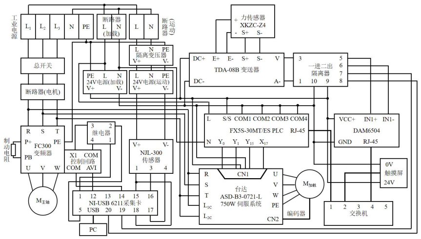
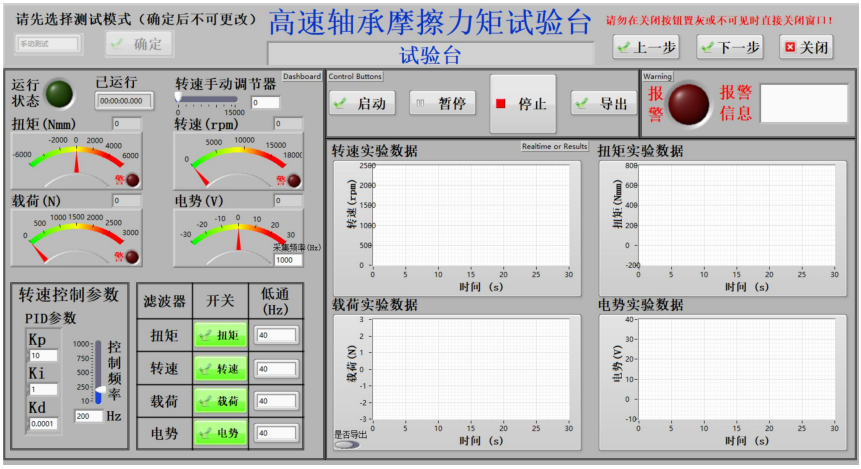
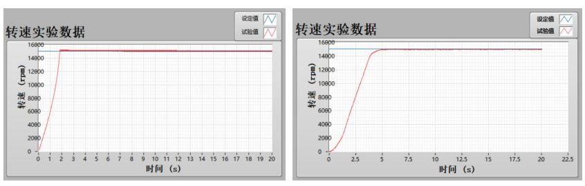
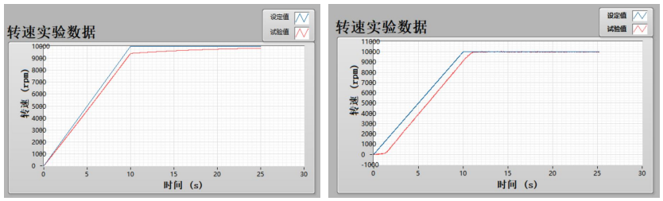

Measurement and Control System for a High-Speed Bearing Friction Torque Test Rig
This undergraduate thesis developed the measurement and control system for a bearing test rig used to study friction torque in electric-drive applications.

- Spindle setpoint tested
- 15,000 rpm
- Friction torque test matrix
- 8 speeds × 8 loads
Measurement and control architecture
I integrated a LabVIEW host, NI USB-6211 data acquisition, and a variable-frequency drive for closed-loop spindle speed control. A PLC and servo system established and held the radial load. The two subsystems worked together to monitor spindle speed, torque, and load.

Spindle control and test software
I modeled the three-phase induction motor in a software-in-the-loop simulation and implemented position-form and incremental PID algorithms. The LabVIEW application supported automated test sequences, input validation, filtering, and data logging.

Validation on the test rig
I compared simulated and measured spindle responses at 5,000, 10,000, and 15,000 rpm and under a ramped speed command. I also measured bearing friction torque at eight spindle speeds from 1,000 to 15,000 rpm, each at eight radial load settings.


The video below shows the test rig in operation.